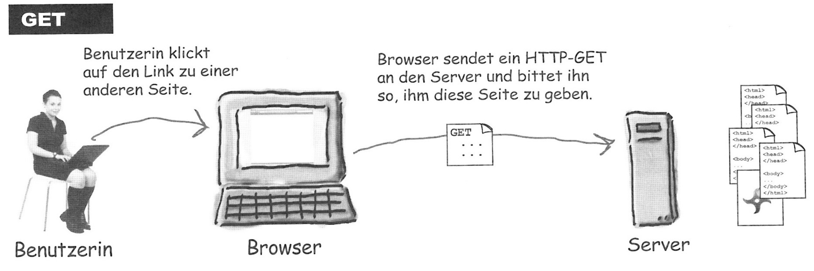
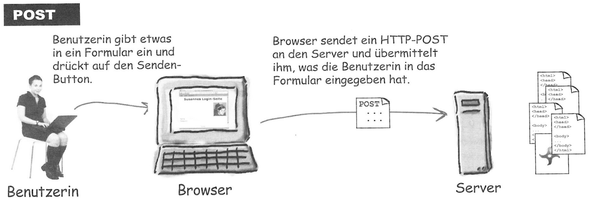
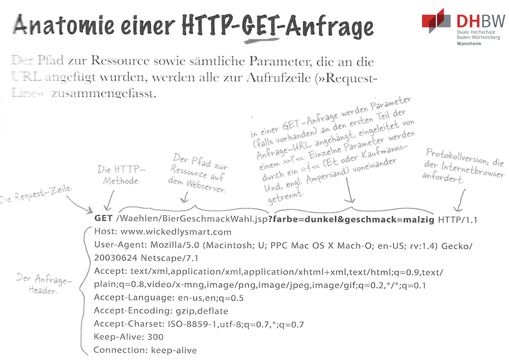
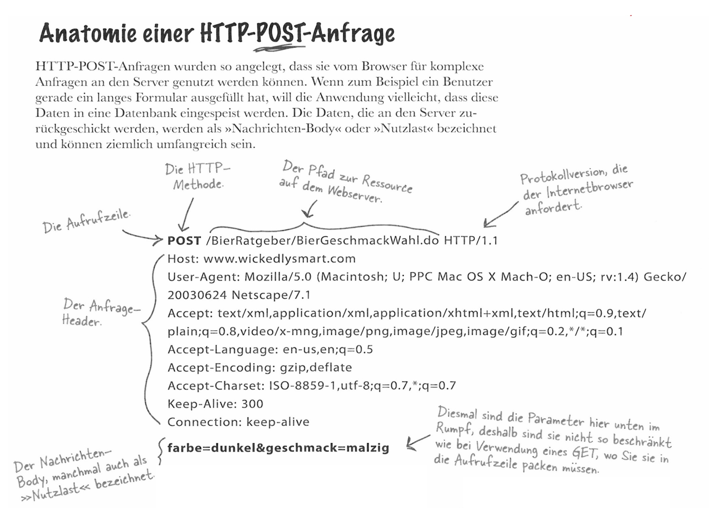
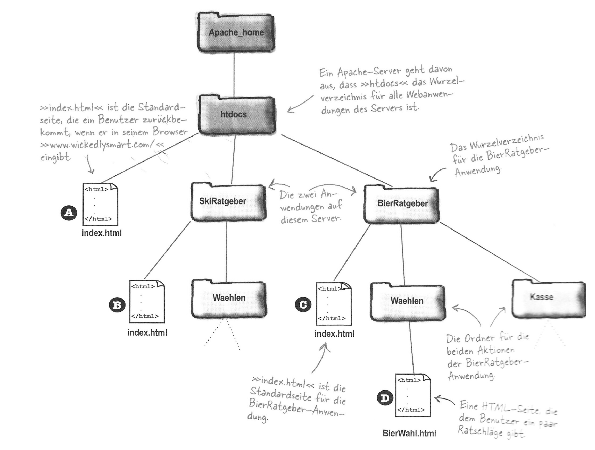
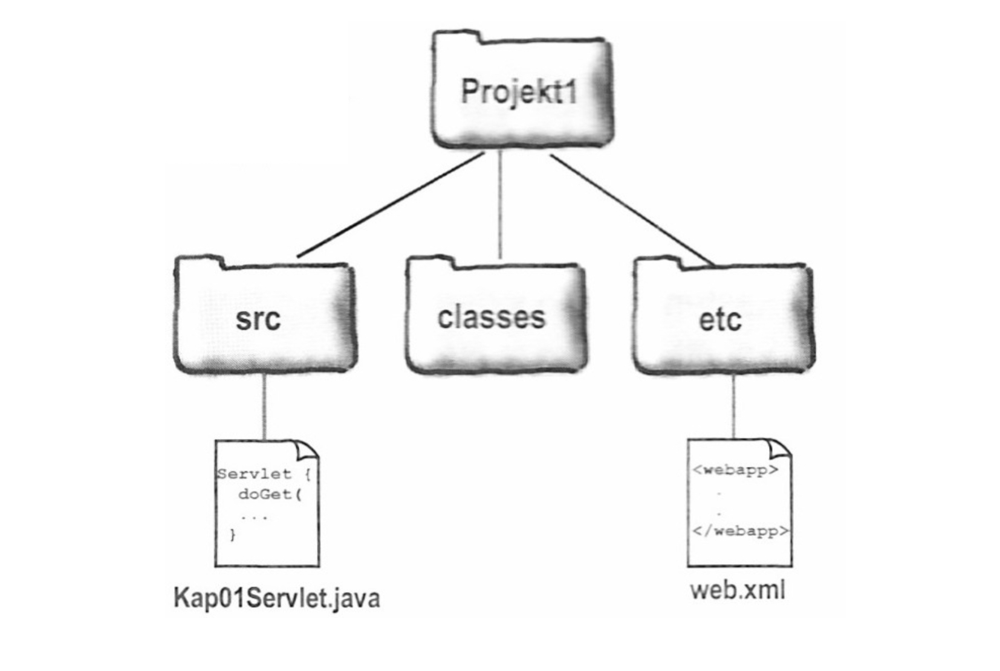
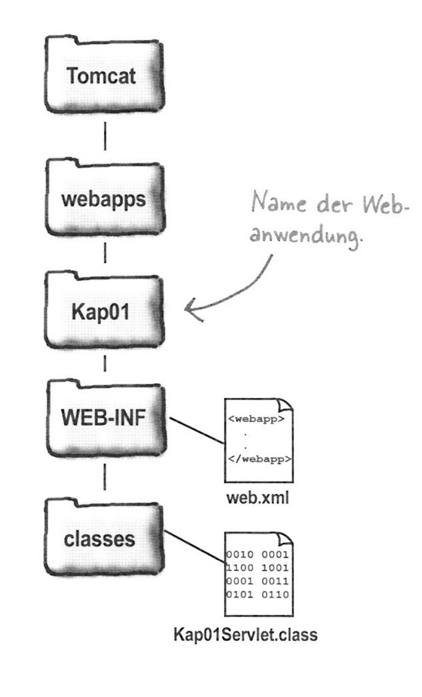
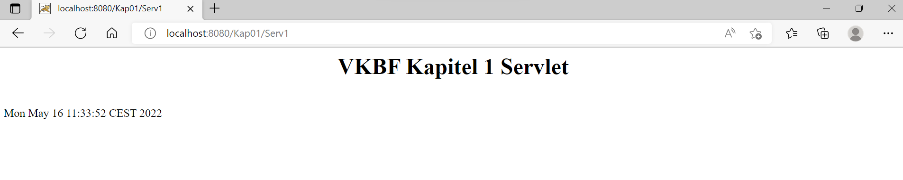

Das heutige Thema sind Java Servlets, dazu nutzen wir den Tomcat9 Server. Der Tomcat ist ein Webserver / Servlet-Container, der es ermöglicht Java-Code in einer HTTP-Webserverumgebung auszuführen. Damit der Tomcat genutzt werden kann, muss zunächst Tomcat 904 installiert und JAVA_HOME aktiviert werden. Die genauen Schritte dazu werden auf der tomcat.apache.org Seite näher erläutert. Bei Verständlichkeitsproblem kann aber auch auf YouTube Videos wie das Folgende zurückgegriffen werden:
Get- und Post-Methoden
Servlets und Java Server Pages (JSP) dienen der Programmierung von Webanwendungen. Dabei kommt es wieder, wie bereits besprochen, zur Client-Server-Kommunikation. Der Client sendet dabei einen HTTP-Request und enthält eine HTTP-Antwort vom Server. Die Anfrage des Clients enthält dabei eine HTTP-Methode. Der Methodenname liefert dabei Informationen über die Art der Anfrage und die Formatierung der Nachricht. Zur Umsetzung werden dabei häufig die sogenannten Get- und Post-Methoden verwendet.
Die folgenden beiden Abbildungen zeigen Dabei den Ablauf der Get- und Post-Methoden.


Die beiden Methoden unterscheiden sich darin, dass die Get-Methode eine einfache Abfrage ist, die den Server darum bittet Datenressource zurückzusenden, wo hingegen die Post-Methode weitere Nutzerdaten übermitteln und das Versenden von Formulardaten an den Server ermöglicht. Doch wann verwendet man welche Methode? Anwendungsfälle für die Post-Methode anstatt der Get-Methode sind beispielweise die drei folgenden. Man möchte einen längeren Text in ein Sucheingabefeld eingeben (Zeichenmenge bei der Get-Methode ist begrenzt). Es sollen sensible bzw. vertrauliche Daten wie zum Beispiel Passwörter übermittelt werden (Alle Inhalte der Get-Methode sind sichtbar). Oder es soll kein Lesezeichen für das gesendete Formular angelegt werden (Die Get-Methode hat immer ein Lesezeichen).
Auch die Anatomie der beiden Methoden unterscheidet sich, was die folgenden zwei Abbildungen verdeutlichen:


Multipurpose Internet Mail Extensions (MIME)-Type
Ein MIME-Type besteht aus einem Header, der Informationen über die Art des Protokolls, ob die Anfrage erfolgreich war und welche Art der Inhalt im Rumpf hat enthält, und einem Rumpf, der den Inhalt, der im Browser dargestellt werden soll, enthält. Dabei wird der im Header angegebene Content-Type-Wert als Multipurpose Internet Mail Extensions-Type (kurz: MIME-Type) bezeichnet. Der MIMI-Type liefert dem Broswer die Information, welche Art von Daten empfangen wird.
Verzeichnisstruktur von Apache-Webseiten
Zur Veranschaulichung wie die Verzeichnisstruktur des Open Source Webservers Apache Tomcat funktioniert, schauen wir uns ein konkretes Beispiel an. Die Beispielwebseite heißt www.wickedlysmart.de. Diese stellt zum einen Ratschläge zum Thema Skifahren und zum anderen zum Thema Bier bereit. In diesem Beispiel läuft der Tomcat auf dem Port 80. Den vier HTML-Pages muss dabei eine URL zugeordent werden. In diesem Beispiel bekommt die Startseite, index.html, dann die URL-Adresse www.wickedlysmart.de. Folgich lässt sich die Ordnerstruktur zur Umsetzung dieser Seite wie folgt beschreiben:

Übung 6
Das beschriebene Vorgehen üben wir nun in Übung 6 an einem Beispiel. In dieser Übung schreiben wir ein Servlet, stellen dieses bereit und führen es aus. Die Arbeitsschritten sehen dabbei folgendermaßen aus:
Zuerst legen wir eine Verzeichnisstruktur, wie oben in der Theorie erläutert, zum Strukturieren unseres Projektes an.

Daraufhin schreiben wir ein Servlet, dessen Dateiname Kap01Servelt.java ist und legen die Datei, wie in der Verzeichnisstruktur dargestellt, in der Ordner src. Daraufin schreiben wir die web.xml-Datei, die als Deployment Destructor dients. Diese Datei ordenen wir in den Ordner etc. Nun legen wir den Verzeichnisbaum, wie die nächste Abbildung zeigt, in unserem Tomcat-Verzeichnis an.

Nach dem Anlegen der Verzeichnisstruktur im Tomcat-Verzeichnis, kompilieren wird das Servlet aus dem Projekt1-Verzeichnis und kopieren daraufhin die Datei Kap01Servelt.class nach WEB-INF/classes und die Datei web.xml nach WEB-INF in dem Tomcat-Verzeichnis.
Nun springen wir in das Tomcat-Verzeichnis und starten den Tomcat. Nach dem Start geben wir im Browser http://localhost:8080/Kap01/Serv1 ein. Falls alles geglückt ist sieht das Endresultat wie folgt aus:

Der Quellcode der beiden Dateien zur erfolgreichen Umsetzung sieht dabei so aus: